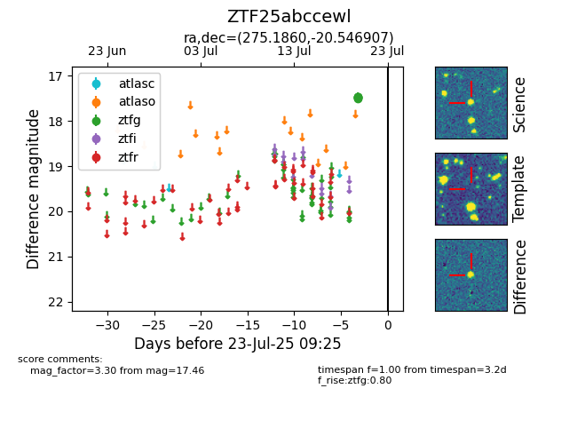

Target ZTF25abccewl at 2025-07-23 12:37, see:
FINK: fink-portal.org/ZTF25abccewl
Lasair: lasair-ztf.lsst.ac.uk/objects/ZTF25abccewl
ALeRCE: alerce.online/object/ZTF25abccewl
alt names
ZTF25abccewl (ztf,fink)
coordinates:
equatorial (ra, dec) = (275.1860,-20.54691)
galactic (l, b) = (11.2277,-2.79489)
photometry
last ztfg=17.46
6 ztfg detections
